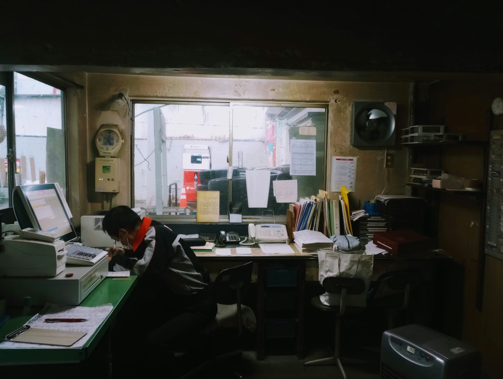

紙・FAX・Excel・手作業を整理し、
AI・SaaS・既存ツールの中から
御社に合った改善方法をご提案します。
AI導入ありき、システム開発ありきではありません。
既存サービスで解決できる場合は既存サービスを活用し、
必要に応じて専門事業者とも連携します。
尼崎を拠点に、大阪・兵庫・京都を中心とした京阪神エリアの物流会社・倉庫・メーカーへ訪問対応しています。大阪市・尼崎市・西宮市・神戸市など阪神間を中心に伺えます。オンラインでの業務改善・AI/DX導入のご相談は全国対応しています。
いきなりAIやシステムを入れるのではなく、まず業務を整理し、最も負担の大きい部分から改善方法を検討します。
人手が足りない中で配送ルートやシフトの調整に多くの時間を取られ、他の業務に手が回らない。
受注書や伝票を手作業でExcelや請求システムに打ち直しており、月末の請求処理や突き合わせに時間がかかっている。

配送状況の確認や見積もり対応など、日々の問い合わせ対応が業務を圧迫している。
配車や在庫の状況が特定の担当者の経験や個人のExcelに頼っており、担当者不在時に業務が滞るリスクを抱えている。
システム会社やSaaS会社から提案を受けても、自社に合うのか、AIが必要なのか、今のExcelで十分なのか判断できない。
入出荷、ピッキング、検品、梱包といった日々の作業は、担当者の経験や感覚に頼りがちな工程です。手順が明文化されていないと、繁忙期や新人対応時にミスが発生しやすくなります。作業の流れと確認ポイントを整理し、誰が行っても同じ品質になる状態を目指すことが、物流・倉庫現場改善の第一歩です。
誤出荷や在庫差異は、検品・棚入れ・出荷確認・在庫管理のどこかに手順のばらつきがあることが原因になっているケースが多く見られます。作業導線や確認手順、WMS・バーコード検品といった既存の仕組みの使い方を見直すことで、原因を特定し、再発防止につなげることができます。生成AIは、過去の誤出荷・ヒヤリハット事例を分類し、原因や傾向を整理する場面で補助的に活用できますが、最終的な検品判断や現場での確認作業は人が担う部分です。
新人教育に時間がかかる、ベテランに聞かないと分からない業務がある、といった状況は、マニュアルが古い、または存在しないことが背景にあるケースが多くあります。作業手順を整理し、マニュアル・FAQ・確認問題として形にすることで、教育担当者の負担を減らし、属人化を軽減できます。この整備作業では、資料の作成・更新を生成AIで効率化できる部分があります。
紙やFAX、Excel、口頭での情報共有が多い現場では、転記や二重入力が発生したり、必要な情報を探すのに時間がかかったりします。まずは業務の流れと情報の持ち方を整理したうえで、Excelや業務フローの見直しで済むのか、既存のSaaS・業務システムを使うべきか、生成AIが向いているのかを切り分けてご提案します。AIやシステムを導入すること自体を目的にはしません。
配車、運行管理、勤怠、請求、受発注、在庫管理などの業務には、物流・運送向けのSaaSや業務システムが数多くあります。一方で、機能が多すぎて現場で使われない、既存のExcelや他のシステムと二重入力になる、といったことも起こりがちです。会社規模・予算・現場の運用に照らして、本当に必要な機能と、既存サービスで足りるかどうかを整理します。
運送会社に限らず、物流現場を持つさまざまな企業様からご相談いただいています。
ドライバー・配車・事務にかけられる人員が限られる中で、業務改善を進めたい会社様。
入出荷・保管・在庫管理など、現場オペレーションを見直したい会社様。
複数の現場・拠点でのオペレーションを標準化したい会社様。
製造だけでなく、物流・出荷業務も自社で抱えている会社様。
受発注・出荷・在庫管理といった物流業務を担う会社様。
出荷量の増加にともない、ピッキング・梱包・検品体制を整えたい会社様。
AIやシステムを入れることが目的ではありません。
現場の困りごとを減らすことが目的です。
「AIを入れればすぐ効率化できる」「このシステムで全部解決できる」といった訴求は行いません。当方が大切にしている6つのことをお伝えします。
物流の業務フロー・課題を丁寧に伺うことから始めます。話を聞かないまま提案することはありません。
業務フローの見直し、Excel・Google Workspaceの改善、既存システムやSaaSの活用、生成AIなどから、御社に合った方法を選びます。業務整理や運用の見直しだけで解決することもあります。
特定の商品を売ることが目的ではありません。開発や専門的な設定が必要な場合は、SaaS会社・システム会社・エンジニアなどの専門事業者と連携し、お客様側の立場で要件や提案内容を整理します。
抽象的な「効率化」ではなく、担当者・業務・手順のレベルまで落とし込んでご提案します。
過度な成果保証はいたしません。導入前に限界や注意点も含めて正直にお話しします。
ご提案後は持ち帰ってご検討いただけます。現場に定着して使い続けられることを重視しています。
物流業界向けのコンサルティングとしての正式な実績はまだ多くありません。以下は、これまでの物流現場での実務経験をもとにした改善例です。実際の支援では、各社の状況に合わせてご提案します。
担当者によって作業方法が異なり、新人教育に時間がかかる。
作業工程・確認ポイントを整理し、標準作業・マニュアル化。
教育時間の短縮、作業品質の均一化、属人化の軽減。
出荷確認が担当者の経験に依存しており、確認漏れや誤出荷のリスクがある。
チェックポイント・確認手順を可視化し、標準化。
確認漏れの防止、誤出荷リスクの低減、新人でも判断しやすい仕組みづくり。
マニュアル・FAQ・社内資料の作成に時間がかかる。
ChatGPT、Claude、NotebookLMなどの生成AIを活用し、資料作成・更新フローを効率化。
資料作成時間の短縮、情報共有の効率化、更新しやすい仕組みづくり。
上記は、実際のコンサルティング実績ではなく、過去の物流現場での実務経験をもとにした改善例です。支援時には、貴社の業務内容・現場状況に合わせて具体的な進め方をご提案します。
AIやシステムを導入すること自体が目的ではありません。業務の整理から、改善方法の選定、現場への定着まで、必要な範囲でご支援します。
現在の業務フロー、紙・FAX・Excel・システムの利用状況、作業時間、転記、ミス、属人化などを整理し、改善優先度を明確にします。AI導入を前提にせず、まず「どこを改善することが最も効果的か」を整理します。
生成AIを活用できる業務について、帳票作成、マニュアル、日報、情報整理、文章作成、社内FAQなどの効率化を支援します。AIを導入すること自体ではなく、現場の作業時間・負担を減らすことを目的とします。
配車、運行管理、日報、勤怠、請求、受発注、在庫管理などについて、既存SaaSや業務システムを比較し、会社規模・予算・現場運用に合った方法を整理します。
自社開発ありきではなく、既存サービスで解決できる場合は既存サービスを優先します。必要に応じて、SaaS会社・システム会社・専門エンジニアとも連携します。
システムやAIツールは、導入しただけでは現場に定着しないことがあります。操作方法、業務フロー変更、マニュアル、社内説明などを含め、実際に現場で使える状態になるまで支援します。
AIの機能紹介ではなく、自社の物流業務を題材にした実務型の研修です。ChatGPT等を使ったことがない方も対象です。
システムやAIの導入を検討するとき、提案する側とは別の立場から、物流現場と業務改善の視点で整理します。
「システム会社から提案を受けたが、本当に自社に合っているか分からない」
「複数のサービスがあり、どれを選べば良いか分からない」
「AIを導入するべきなのか、既存システムで十分なのか判断できない」
特定のシステム導入を前提にせず、現在の業務・費用・運用負担を踏まえて、適した選択肢を一緒に検討します。
システム導入の予定がない場合も、入荷・保管・ピッキング・検品・出荷・在庫管理など、現場作業そのものを物流現場経験者の第三者視点で整理する「業務改善診断」をご利用いただけます。
どこから手をつければよいか分からない場合も、
まずは無料相談で現場の状況をお聞かせください。
まずは初回相談（無料）から始めていただけます。金額はいずれも目安であり、企業規模・訪問回数・対象業務・支援内容によって変わるため、内容を伺ったうえで個別にお見積りします。ご納得いただけない場合は、そこで終了で構いません。
まず話を聞いてみたい方へ
現場の状況を第三者視点で整理したい方へ
どこから手をつけるかを決めたい方へ
どのシステムを選ぶべきか迷っている方へ
現場に定着するまで一緒に進めたい方へ
実際の業務でAIを使えるようにしたい方へ
物流・倉庫現場で約8年の実務経験があります。物流センターでは派遣・パートスタッフのマネジメントと在庫管理・出荷業務に従事してきました。現場の制約や忙しさを踏まえて、どこから改善すべきかを一緒に整理できます。
特定のAIツールやシステムを売ることが目的ではありません。「すぐに成果が出る」といった過度な訴求はせず、できること・できないことを正直にお伝えします。
大規模なシステム導入ありきではなく、限られた人員・予算でも実行できる、現実的な改善策をご提案します。既存のツールやサービスで済む場合は、そちらを優先します。
物流現場の経験、約10年の法人営業経験、現在の支援業務で使い込んでいるClaude Code・Codex・Geminiなどのツールの知見をもとに、現場の言葉とシステム側の言葉をつなぎ、「使われ続ける」形に落とし込みます。
物流・倉庫現場での実務経験と法人営業の経験、そして業務改善・AI活用の実践知をもとにご支援します。
物流部門での実務経験をもとに、
現場の事情を踏まえてご提案します。
東証プライム上場企業グループにて営業・企画・物流部門を幅広く経験。物流会社に出向し、物流センターの現場マネジメントと業務改善に従事してきました。
現在は、その実務経験を活かし、物流・運送・倉庫会社の業務改善を支援しています。AI・SaaS・既存システム・Excelなどの中から、お客様側の立場で現場に合った方法を選び、必要に応じて専門事業者ともつなぎます。「AIやシステムを入れることが目的ではなく、現場の困りごとを減らすことが目的」という考え方を大切にしています。
お問い合わせから支援開始までの進め方です。いきなりAIツールやシステムの導入から始めることはありません。また、途中で中止いただいても構いません。
フォームから、いま困っていることをお送りください。まとまっていない状態でも構いません。通常2営業日以内にご返信します。
無料現在の業務内容、人員体制、時間がかかっている作業を伺います。この時点で「AIや新しいシステムは不要」と判断した場合も、その旨を正直にお伝えします。その場での契約は求めません。
無料現場ヒアリングをもとに業務を棚卸しし、時間がかかっている作業・属人化している作業を整理します。そのうえで、改善の優先順位と進め方を提案書としてまとめます。
業務改善診断プランいきなり全社展開はしません。まずは1業務・1チームから試し、実際に現場で使えるか、時間が減るかを確認します。使いにくければ、その場で作り直します。
継続支援プラン効果を確認しながら、対象業務を少しずつ広げます。担当者が変わっても運用が続くよう、手順とルールを残す形でご支援します。
継続支援プラン物流業界向けの支援を立ち上げたばかりのため、実際の現場で一緒に取り組んでいただける企業様を募集しています。 支援の進め方や成果を記録させていただく代わりに、通常より優待した条件でご支援します。
※ モニターだからといって内容を簡略化することはありません。掲載を望まれない場合は、その旨をお知らせいただければ通常のご支援としてお受けします。
現在準備中です。物流業界向けの支援を始めたばかりのため、実在しない導入実績やお客様の声を掲載することはいたしません。
ご協力いただける企業様との取り組みが形になり次第、こちらに掲載していきます。
物流現場からよくいただくご質問をまとめました。できること・できないことを、正直にお答えしています。
まず物流・運送・倉庫の業務内容と困りごとを伺い、時間がかかっている作業や、転記・二重入力・属人化が起きている業務を整理するところから始めます。
そのうえで、業務フローの見直し、Excelや既存ツールの改善、SaaS・業務システムの活用、マニュアル整備、生成AIの活用などから、必要な改善策をご提案します。いきなりAIツールやシステムの導入から始めることはありません。
もちろん可能です。FMP WORKsではAI導入自体を目的としていません。業務負担やミスを減らすことを目的として、Excel改善、SaaS、業務フロー変更なども含めて検討します。生成AIを使ったことがない企業様でも問題ありません。
必ずしも自社開発を行うわけではありません。既存SaaSや既存ツールで解決できる場合は、そちらを活用する方が費用や保守面で有利なことがあります。
業務課題を整理したうえで、既存サービス、AI活用、業務フロー改善、必要に応じた専門事業者との連携などから、適した方法をご提案します。
はい。現在の業務内容、提案されている機能、費用、現場での運用方法などを整理し、自社に合っているかを一緒に確認します。必要に応じて他のSaaSや改善方法とも比較します。
新人教育では、既存の作業手順書やベテラン社員のノウハウを整理し、次のような教育資料を作成する用途に生成AIを活用できます。
また、社内資料をもとに質問できる仕組みを作ることで、「毎回同じ質問にベテラン社員が対応する」負担を減らす方法も検討できます。
ただし、AIだけで教育を完結させるのではなく、実技教育や安全確認と組み合わせて活用します。
既存資料と、ベテラン社員へのヒアリング内容を整理したうえで、次のような形に落とし込むご支援をします。
目的はAIを導入することではなく、ベテラン社員の頭の中にある知識を、会社の資産として残すことです。
はい、ご相談いただけます。入荷・保管・ピッキング・検品・梱包・出荷・在庫管理といった倉庫内オペレーション全般について、作業の流れと確認ポイントを整理し、標準化やマニュアル化をご支援します。倉庫会社様、物流センター様、自社倉庫を持つメーカー様・卸売会社様からのご相談も多くいただいています。
はい、ご相談いただけます。配車・運行管理、勤怠・シフト管理、請求書・伝票処理、問い合わせ対応、日報・報告書の作成など、運送会社様で発生しやすい業務を伺ったうえで、業務フローの見直し、既存のSaaS・業務システムの活用、生成AIの活用などから、向いている方法を整理してご提案します。AIやシステムの導入自体を目的にはしません。
AIだけで誤出荷や在庫差異を防げるとは考えていません。次のような既存の対策が引き続き重要です。
そのうえで、まず現状の作業手順と発生状況を整理し、原因を特定します。生成AIについては、過去の誤出荷・在庫差異事例の分類、ヒヤリハットの整理、原因の整理、再発防止資料や新人教育教材づくりといった部分での活用を検討します。
まず現在の入力方法（手書き・Excel・チャットなど）を確認します。そのうえで、次のような流れの作成を生成AIで補助できる可能性があります。
箇条書きのメモ → 報告文 → 要約 → 上司向けの文章
専用のプロンプトや入力テンプレートまで作成し、現場で繰り返し使える形にすることを目指します。文章を書く時間を減らし、本来の管理業務に時間を使えるようにすることが目的です。
日報アプリや運行管理システムなど、既存のサービスで対応したほうがよい場合は、そちらもご提案します。
最初からAIツールを選ぶ必要はありません。まず、社内の業務を次の観点で整理するところから始めます。
そのうえで、AIが向いている業務だけを選定します。向いていない業務には、無理に使いません。
専門用語を前提にした説明はしません。実際の物流業務を題材にしながらご支援します。
ツールの操作を覚えること自体が目的ではなく、「自分の業務でどう使うか」を理解していただくことを重視しています。
成果を保証するものではありません。AIでもシステムでも、業務内容・現場の環境・運用方法によって効果は異なります。
そのため、次のような段階的な進め方をおすすめしています。
小さな業務から試す → 効果を確認する → 改善する → 対象業務を増やす
物流・倉庫現場で約8年の実務経験があります。上場企業グループの物流会社に出向し、物流センターで在庫管理・出荷業務、派遣・パートスタッフのマネジメント、業務マニュアルの策定とスタッフ教育に携わってきました。現場の制約を踏まえたご提案が可能です。
はい、規模を問わずご相談いただけます。限られた人員・予算でも実行できる、現実的な改善策をご提案します。既存のツールや手頃なサービスで済む場合は、そちらを優先します。
いいえ、その場での契約を求めることはありません。ご提案後は持ち帰ってご検討いただけます。お断りいただいても構いません。
はい、Zoom・Google Meet等のオンラインツールでの対応が可能です。全国どこからでもご相談いただけます。現場を実際に拝見したほうがよい場合は、訪問についてもご相談ください。
訪問は尼崎を拠点に、大阪・兵庫・京都を中心とした京阪神エリアを中心にお伺いしています。京阪神エリア外の場合も、まずはオンラインでの相談から承っています。オンラインでの業務改善・AI/DX導入のご相談は全国対応です。
はい、可能です。大阪・兵庫・京都を中心とした京阪神エリアの企業様には、現場への訪問対応もしております。作業の様子を直接拝見することで、書類やヒアリングだけでは分かりにくい作業導線やムダも整理しやすくなります。訪問の要否は、初回相談の中でご相談ください。
無料相談では、まず現在の業務内容や課題を伺います。
AIやシステムありきでの提案や、その場での契約を求めることはありません。
「何を相談すればよいか分からない」という状態でも構いません。
通常2営業日以内に、ご記入いただいたメールアドレス宛にご返信します。
しばらく経っても返信が届かない場合は、
お手数ですが迷惑メールフォルダをご確認ください。
お問い合わせは上記フォームからのみ承っております。
ご記入いただいたメールアドレス宛に、直接ご返信します。